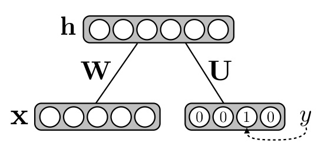
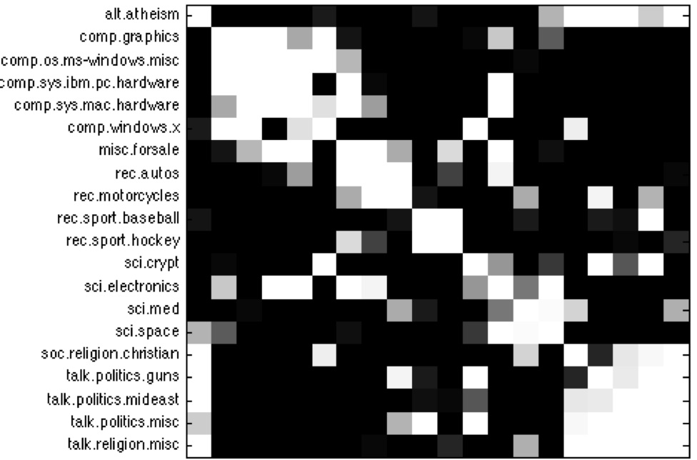

Restricted Boltzmann machines for classification

While restricted Boltzmann machines have
been mostly used for unsupervised learning of useful
latent representations, it is actually possible to use
them as supervised, black-box models in their own right
and not rely on any other classification algorithm to
perform classification.
This is
what
Yoshua
Bengio and I demonstrated
in
Classification
using Discriminative Restricted Boltzmann Machines. We
designed supervised and semi-supervised algorithms that
would allow this classification RBM to reach state of the
art performance. Along with Michael Mandel and Razvan
Pascanu, we further extended these algorithms to the
contexts of very high dimensional inputs and of multiple
related tasks,
in
Learning
Algorithms for the Classiffcation Restricted Boltzmann
Machine.
When trained to classify documents into
topics, it even discovered an appropriate notion of
similarity between related topics, as shown by the
block structure in the figure below (white = similar, hence
we see that computer-related topics are grouped together,
as well as politics-related topics).

In
Classification
of Sets using Restricted Boltzmann Machines, Jérôme
Louradour and I further generalized the classification RBM
so that it could be applied to problems where the input
corresponds to a set of objects, as opposed to a single
object. This variant could then be successfully applied to the
problem of automatic mail classification, where a piece of
mail, corresponding to several separate documents
(letter, check, form, etc.), must be assigned to the right
department in a large organization.
References
- Learning Algorithms for the Classiffcation Restricted Boltzmann Machine [pdf]
Hugo Larochelle, Michael Mandel, Razvan Pascanu and Yoshua Bengio,
Journal of Machine Learning Research, 13(Mar): 643--669, 2012
- Classification of Sets using Restricted Boltzmann Machines [pdf] [supp] [arxiv]
Jérôme Louradour and Hugo Larochelle,
Uncertainty in Artificial Intelligence, 2011
- Classification using Discriminative Restricted Boltzmann Machines [pdf] [talk]
Hugo Larochelle and Yoshua Bengio,
International Conference on Machine Learning proceedings, 2008